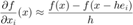
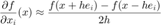

Poblano Toolbox for MATLAB: Checking Gradient Calculations
Analytic gradients can be checked using finite difference approximations. The Poblano function gradientcheck computes the gradient approximations and compares the results to the analytic gradient using a user-supplied objective function/gradient M-file. The user can choose one of several difference formulas as well as the difference step used in the computations.
Contents
Difference Formulas
The difference formulas for approximating the gradients in Poblano are listed below. For more details on the different formulas, see [1].
Forward Differences

Backward Differences

Centered Differences

Note that is a vector the same size as  with a 1 in element
with a 1 in element  and zeros elsewhere. The type of finite differences to use is specified using the DifferenceType input parameter, and the value of
and zeros elsewhere. The type of finite differences to use is specified using the DifferenceType input parameter, and the value of  is specified using the DifferenceStep input parameter.
is specified using the DifferenceStep input parameter.
For a detailed discussion on the impact of the choice of on the quality of the approximation, see [2].
Gradient Check Input Parameters
The input parameters available for the gradientcheck function are presented below.
DifferenceType Difference formula to use {'forward'}
'forward' g_i = (f(x+he_i)-f(x)) / h
'backward' g_i = (f(x)-f(x-he_i)) / h
'centered' g_i = (f(x+he_i)-f(x-he_i)) / (2h)DifferenceStep Value of h in difference formulae {1e-8}Gradient Check Output Parameters
The fields in the structure of output parameters generated by the gradientcheck function are presented below.
G Analytic gradient
GFD FD approximation of gradient
MaxDiff Maximum difference between G and GFD
MaxDiffInd Index of maximum difference between G and GFD
NormGradientDiffs 2-norm of G - GFD
GradientDiffs G - GFD
Params Parameters used to compute FD approximations
Examples
We use example1 (described in detail in the Poblano Examples section) to illustrate how to use the gradientcheck function to check user-supplied gradients. The user provides a function handle to the M-file containing their function and gradient computations, a point at which to check the gradients, and the type of difference formula to use. Below is an example of running the gradient check using each of the difference formulas.
outFD = gradientcheck(@(x) example1(x,3), pi./[4 5 6]','DifferenceType','forward') outBD = gradientcheck(@(x) example1(x,3), pi./[4 5 6]','DifferenceType','backward') outCD = gradientcheck(@(x) example1(x,3), pi./[4 5 6]','DifferenceType','centered')
outFD =
struct with fields:
G: [3×1 double]
GFD: [3×1 double]
MaxDiff: 6.4662e-08
MaxDiffInd: 1
NormGradientDiffs: 8.4203e-08
GradientDiffs: [3×1 double]
Params: [1×1 struct]
outBD =
struct with fields:
G: [3×1 double]
GFD: [3×1 double]
MaxDiff: -4.4409e-08
MaxDiffInd: 3
NormGradientDiffs: 5.2404e-08
GradientDiffs: [3×1 double]
Params: [1×1 struct]
outCD =
struct with fields:
G: [3×1 double]
GFD: [3×1 double]
MaxDiff: 2.0253e-08
MaxDiffInd: 1
NormGradientDiffs: 2.1927e-08
GradientDiffs: [3×1 double]
Params: [1×1 struct]
Note the different gradients produced using the various differencing formulas:
format long [outFD.G outFD.GFD outBD.GFD outCD.GFD] format short
ans =
Columns 1 through 3
-2.121320343559642 -2.121320408221550 -2.121320319403708
-0.927050983124842 -0.927051013732694 -0.927050969323773
0.000000000000000 -0.000000044408921 0.000000044408921
Column 4
-2.121320363812629
-0.927050991528233
0
References
[1] Nocedal, J. and Wright S. J. (1999). Numerical Optimization. Springer.
[2] Overton, M. L. (2001). Numerical Computing with IEEE Floating Point Arithmetic. Society for Industrial and Applied Mathematics.